Năm học 2026–2027 · Học kỳ 1
Trường Đại học Công nghệ · Đại học Quốc gia Hà Nội
Tối ưu lồi, đối ngẫu, tối ưu có và không có ràng buộc.
Tối ưu cho học sâu; quy hoạch tuyến tính, đơn hình, luồng mạng, quy hoạch nguyên.
Mô hình đồ thị có hướng và vô hướng.
Suy diễn và học tham số từ dữ liệu.
| Thành phần | Hình thức | Trọng số |
|---|---|---|
| Thường xuyên | Câu hỏi ngắn, bài tập cá nhân hoặc nhóm, bài kiểm tra | 20% |
| Giữa kỳ | Bài kiểm tra giữa kỳ | 20% |
| Cuối kỳ | Một buổi trong tuần 15, một buổi theo lịch thi | 60% |
Điểm học phần (thang 10) = 0,2 × thường xuyên + 0,2 × giữa kỳ + 0,6 × cuối kỳ.
Điều khiển
Chọn tác động bám đích trong giới hạn
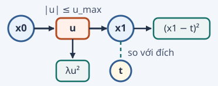
Hồi quy tuyến tính
Chọn tham số khớp dữ liệu số
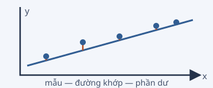
Hồi quy logistic
Chọn tham số để phân loại
Nhu cầu: lập mô hình tối ưu và tìm giả thiết bảo đảm nghiệm toàn cục, tồn tại, duy nhất.
Muốn chọn tác động $u$ gần đích với $|u|\le u_{\max}$ và xác định nghiệm nằm trong hay trên biên.
Hàm chi phí · ràng buộc biên độ · nghiệm trên biên
Nhu cầu: chọn $u$ đưa $x_1$ gần đích $t$, tốn ít năng lượng, với $|u|\le u_{\max}$.
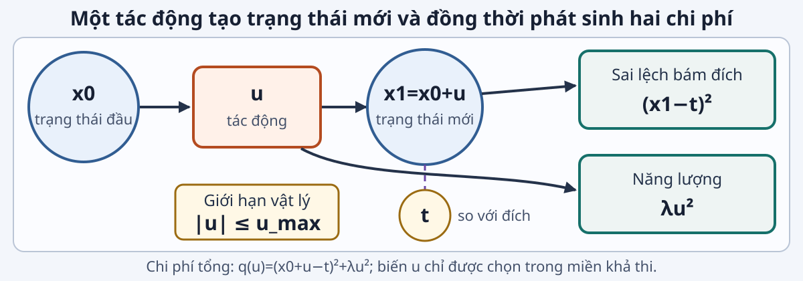
Dữ kiện $x_0,t\in\mathbb R$, $u_{\max}\ge0$, $\lambda\ge0$; $t$ là đích:
Quyết định: chọn $u\in\mathbb R$ sao cho
Bám đích: $(x_0+u-t)^2=(x_1-t)^2$, bình phương sai lệch sau một bước.
Năng lượng: $\lambda u^2$ phạt độ lớn của tác động, trọng số $\lambda\ge0$.
Mô hình điều khiển một bước là bài toán
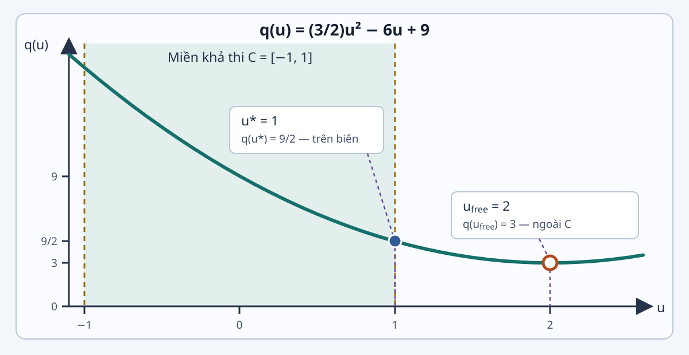
Cho $x_0=0$, $t=3$, $\lambda=\tfrac12$, $u_{\max}=1$: $q(u)=\tfrac32u^2-6u+9$ trên $C=[-1,1]$.
Tính cực tiểu không ràng buộc và nghiệm trên $C$.
Trên $C$, $q'(u)\le-3<0$ nên $q$ giảm: $u^*=1$, $q(u^*)=\tfrac92$.
Diễn giải: nghiệm nằm trên biên phải; ràng buộc làm giá trị tối ưu tăng từ $q(2)=3$ lên $\tfrac92$.
Câu hỏi: Với $q(u)=\tfrac32u^2-6u+9$ trên $C=[-1,1]$, chứng minh $u^*=1$ là nghiệm tối ưu duy nhất, dù $q'(1)=-3\ne0$.
Lời giải: mọi $u\in C$ khác $1$ có dạng $1+\Delta$ với $\Delta\in[-2,0)$.
Do đó $q(u)>q(1)$ với mọi $u\in C$, $u\ne1$.
Lưu ý: phương trình $q'(u)=0$ là điều kiện cần chỉ tại điểm trong (không phải đầu mút) của miền.
Muốn chọn tham số của dự đoán tuyến tính khớp dữ liệu số và biết khi nào nghiệm duy nhất.
Ma trận thiết kế · bình phương nhỏ nhất · phương trình chuẩn · hạng cột
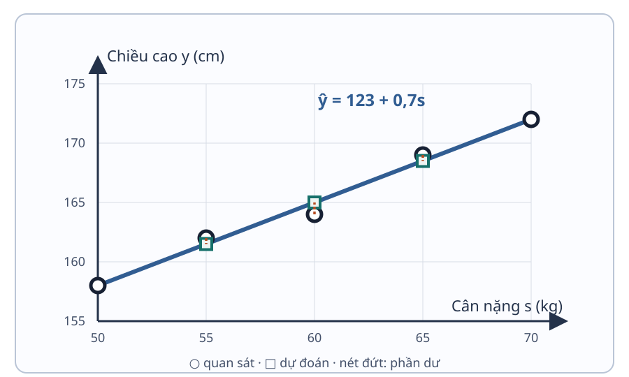
Muốn dự đoán chiều cao $y_i$ (cm) từ cân nặng $s_i$ (kg).
| $s_i$ (kg) | 50 | 55 | 60 | 65 | 70 |
|---|---|---|---|---|---|
| $y_i$ (cm) | 158 | 162 | 164 | 169 | 172 |
Dự đoán bằng đường thẳng $\hat y_i=w_0+w_1s_i$.
Câu hỏi: Đại lượng nào cho phép so sánh độ khớp của hai đường thẳng?
Khi đó $\hat y_i=a_i^Tw=w_0+w_1s_i$.
Với $n$ mẫu và $d$ cột, $X\in\mathbb R^{n\times d}$, $w\in\mathbb R^d$, $y\in\mathbb R^n$:
Hàng $i$ của ma trận thiết kế $X$ là $a_i^T$, vector đặc trưng của mẫu $i$; cột $j$ chứa đặc trưng $j$ của $n$ mẫu.
Cột đầu toàn số $1$ đưa hệ số chặn $w_0$ vào vector $w$.
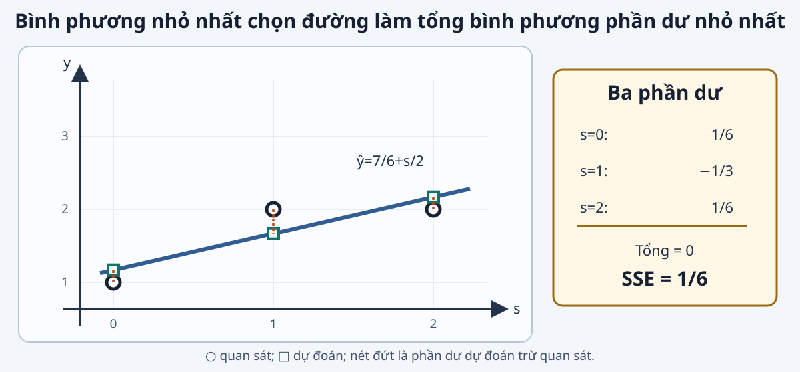
Cho ba điểm $(s_i,y_i)$: $(0,1)$, $(1,2)$, $(2,2)$; mô hình $\hat y_i=w_0+w_1s_i$.
Nhắc lại: nghiệm thỏa phương trình chuẩn $X^TXw=X^Ty$ (Định lý 00.22). Tính $w^*$:
Suy ra $w^*=(7/6,\,1/2)^T$, phần dư $Xw^*-y=(1/6,\,-1/3,\,1/6)^T$ và $J(w^*)=\tfrac16$.
Diễn giải: hệ số chặn $w_0^*=7/6$, hệ số góc $w_1^*=1/2$; tổng phần dư bằng $0$.
Câu hỏi: Thêm vào $X$ một cột trùng cột thứ hai. Tìm mọi tham số tối ưu.
Nhắc lại: $X\in\mathbb R^{n\times d}$ có hạng cột đầy đủ (full column rank) nếu $\operatorname{rank}(X)=d$, tức $Xv=0$ chỉ có nghiệm $v=0$.
Lời giải: $X'w'=w_0\mathbf 1+(w_1+w_2)(0,1,2)^T$ với $\mathbf 1=(1,1,1)^T$; dự đoán tối ưu $(7/6,5/3,13/6)^T$ và giá trị $1/6$ không đổi.
Vì $\mathbf 1$, $(0,1,2)^T$ độc lập, tập tối ưu là $\{(7/6,\,\kappa,\,1/2-\kappa)^T\mid \kappa\in\mathbb R\}$.
$X'(0,1,-1)^T=0$ nên $X'$ không có hạng cột đầy đủ ($\operatorname{rank}(X')=2<3$); nghiệm không duy nhất.
Nhu cầu: học tham số $w$ cho quyết định hai lớp từ dữ liệu có nhãn và biết bài toán có nghiệm hay không.
Biên có dấu · mất mát logistic · dữ liệu tách được tuyến tính · cận dưới đúng
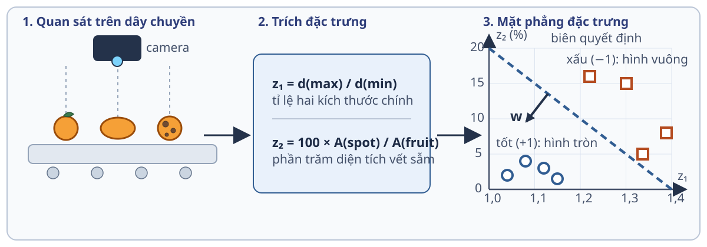
$z_1=d_{\max}/d_{\min}$: tỉ lệ hai kích thước chính của quả.
$z_2=100\,A_{\mathrm{spot}}/A_{\mathrm{fruit}}$: phần trăm diện tích vết sẫm.
Nhãn $y=+1$ cho cam tốt, $y=-1$ cho cam xấu.
Nhu cầu: từ các quả cam đã gán nhãn, học một đường thẳng tách cam tốt khỏi cam xấu.
Với $a_i\in\mathbb R^d$, $y_i\in\{-1,+1\}$, nhãn dự đoán là dấu của điểm số $a_i^Tw$.
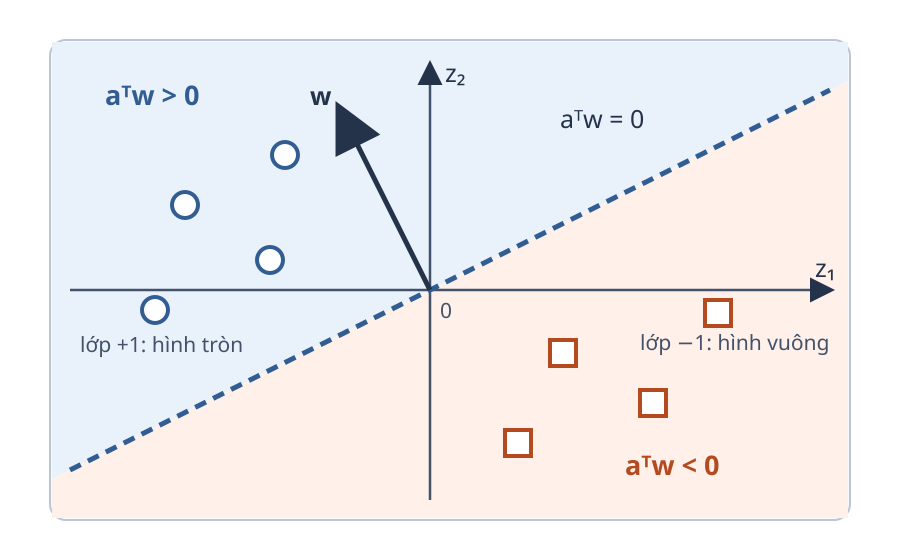
Định nghĩa. Biên có dấu (signed margin, còn gọi là lề có dấu) của mẫu $i$ là
$m$ tăng thì $\ell(m)$ giảm.
Mô hình cơ sở không có ràng buộc bổ sung: $\min_{w\in\mathbb R^d}L(w)$.
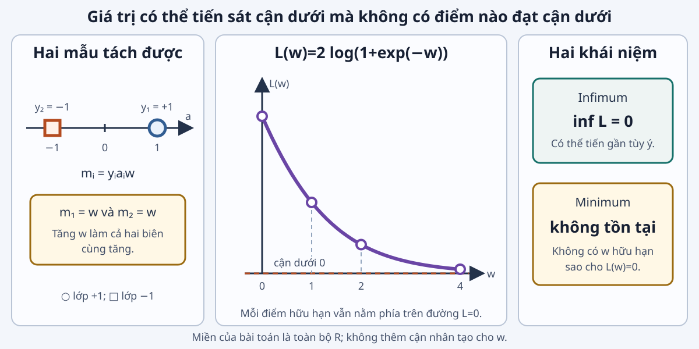
$(a_i,y_i)$: $(1,+1)$ và $(-1,-1)$.
Dữ liệu gọi là tách được tuyến tính nếu có $w$ với mọi $m_i>0$.
Tính $L(w)$ và $\inf_wL(w)$.
| $w$ | 0 | 1 | 2 | 4 |
|---|---|---|---|---|
| $L(w)$ | 1,386 | 0,627 | 0,254 | 0,036 |
Diễn giải: $\inf_wL(w)=0$, nhưng $L(w)>0$ với mọi $w$ hữu hạn; cận dưới không đạt.
Câu hỏi: Với $L(w)=2\log(1+e^{-w})$, dãy $w^{(k)}=k$ cho $L(w^{(k)})\to0$. Có $w^{(k)}$ nào là nghiệm tối ưu không?
Lời giải: không. $L$ giảm chặt nên $L(w^{(k+1)})<L(w^{(k)})$: luôn có điểm tốt hơn $w^{(k)}$.
$L(w)>0=\inf_wL(w)$ với mọi $w$ hữu hạn, nên không điểm nào đạt cận dưới.
Kết luận: $w^{(k)}$ là dãy cực tiểu hóa (minimizing sequence), tức $L(w^{(k)})\to\inf L$, nhưng không có nghiệm tối ưu.
Muốn đặt ba bài toán vào cùng một dạng để so sánh các kết luận về nghiệm.
Biến quyết định · hàm mục tiêu · miền khả thi · các loại kết luận
Nhu cầu: một dạng chung để so sánh kết luận về nghiệm của ba bài toán.
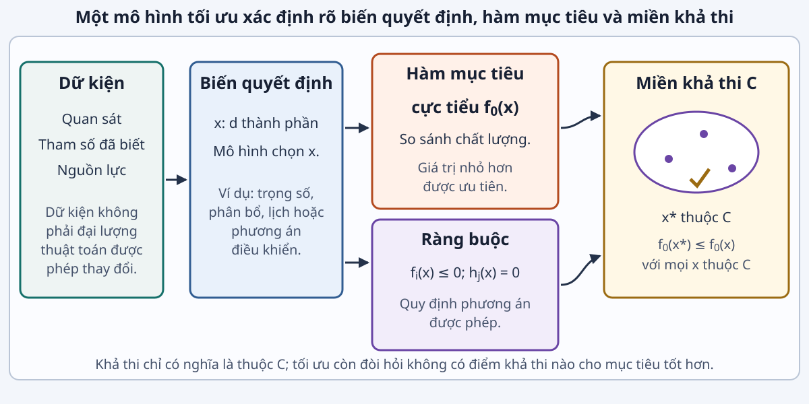
| Bài toán | Biến $x$ | Mục tiêu $f_0$ | Miền $C$ |
|---|---|---|---|
| Điều khiển | $u\in\mathbb R$ | $(x_0+u-t)^2+\lambda u^2$ | $[-u_{\max},u_{\max}]$ |
| Hồi quy tuyến tính | $w\in\mathbb R^d$ | $\lVert Xw-y\rVert_2^2$ | $\mathbb R^d$ |
| Hồi quy logistic | $w\in\mathbb R^d$ | $\sum_i\log(1+e^{-y_i a_i^Tw})$ | $\mathbb R^d$ |
Ký hiệu $x$ chỉ vai trò trong bài toán: tác động điều khiển hoặc tham số mô hình.
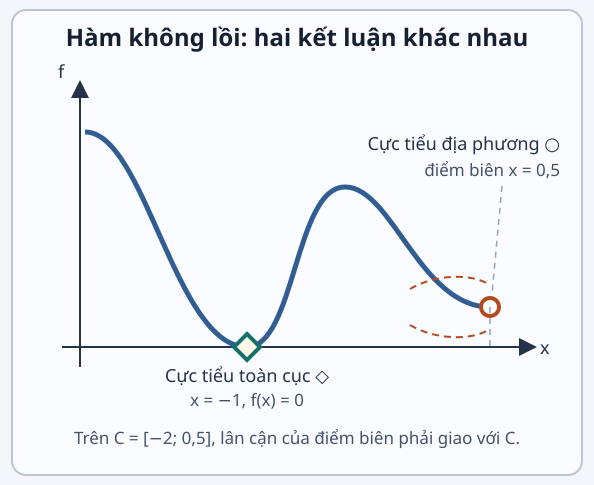
Định nghĩa. $x^*\in C$ là cực tiểu địa phương (local minimum) tương đối với $C$ nếu có $r>0$ để $f_0(x^*)\le f_0(x)$ với mọi $x\in C$, $\lVert x-x^*\rVert_2\le r$.
$x^*\in C$ là cực tiểu toàn cục nếu $f_0(x^*)\le f_0(x)$ với mọi $x\in C$, tức là một nghiệm tối ưu.
| Kết luận | Phát biểu |
|---|---|
| Điểm khả thi | $x\in C$ |
| Giá trị tối ưu (optimal value) | $p^*=\inf_{x\in C}f_0(x)$; cận dưới có thể không đạt |
| Tồn tại | Tập nghiệm $S^*=\{x\in C\mid f_0(x)=p^*\}$ khác rỗng |
| Duy nhất | $S^*$ có đúng một phần tử |
Lưu ý: kết luận toàn cục hỏi một điểm ứng viên $\hat x\in C$ có thỏa $f_0(\hat x)=p^*$ hay không.
Nhu cầu: tìm giả thiết trên $C$ và $f_0$ đủ để bảo đảm cực tiểu toàn cục, tồn tại, duy nhất.
Tập lồi · hàm lồi · điều kiện bậc nhất, bậc hai · tồn tại và duy nhất
Nhu cầu: điều kiện trên $C$ cho câu 2, trên $f_0$ cho câu 3, trên cả hai cho câu 4 đến câu 6.
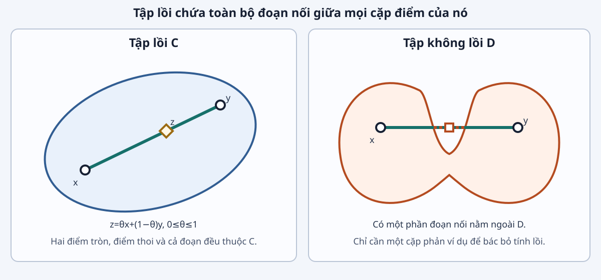
Chọn hai phương án $x,y\in C$ và một hệ số $\theta\in[0,1]$.
$z_\theta$ gọi là tổ hợp lồi (convex combination) của $x$ và $y$; nó nằm trên đoạn nối $x$ và $y$.
Trực quan. Miền lồi chứa trọn đoạn nối hai phương án khả thi bất kỳ.
Phải kiểm tra mọi cặp điểm trong tập.
Phải kiểm tra toàn bộ $\theta\in[0,1]$.
| Tập | Dạng | Lý do lồi |
|---|---|---|
| Toàn không gian | $\mathbb R^d$ | Mọi tổ hợp lồi thuộc $\mathbb R^d$ |
| Hộp (đoạn khi $d=1$) | $\underline x_j\le x_j\le\overline x_j$ | Từng tọa độ của $z_\theta$ nằm giữa hai cận |
| Tập affine | $\{x\mid Ax=c\}$ | $Az_\theta=\theta c+(1-\theta)c=c$ |
| Nửa không gian | $\{x\mid g^Tx\le\beta\}$ | $g^Tz_\theta\le\theta\beta+(1-\theta)\beta=\beta$ |
Nếu mọi $C_j$ lồi thì $\bigcap_j C_j$ lồi.
Nếu $E$ lồi thì $\{x\mid Ax+c\in E\}$ lồi.
Câu hỏi: Chứng nhận miền khả thi của mỗi bài toán là tập lồi.
| Bài toán | Miền khả thi |
|---|---|
| Điều khiển | $[-u_{\max},u_{\max}]$ |
| Hồi quy tuyến tính | $\mathbb R^d$ |
| Hồi quy logistic | $\mathbb R^d$ |
Lời giải: $[-u_{\max},u_{\max}]=\{u\mid u\le u_{\max}\}\cap\{u\mid -u\le u_{\max}\}$ là giao của hai nửa không gian, nên lồi.
Hai bài toán hồi quy có miền $\mathbb R^d$, là toàn không gian, nên lồi.
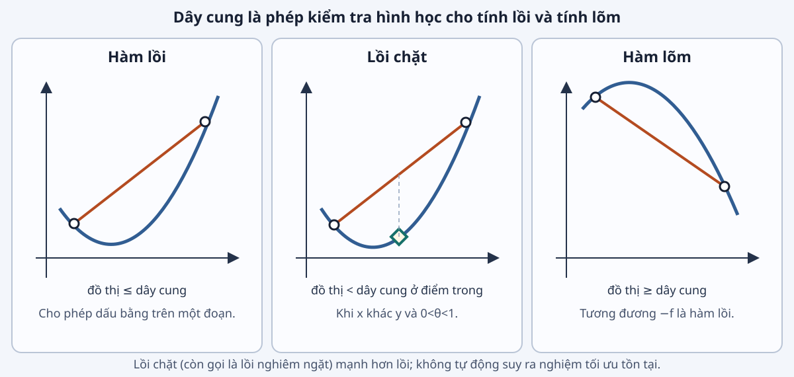
Với $x,y\in C$ và $0\le\theta\le1$:
So sánh $f(z)$ với trung bình có trọng số của $f(x)$ và $f(y)$.
Trực quan. Đồ thị của hàm lồi không vượt lên trên dây cung.
Định nghĩa. $f$ là lồi chặt (còn gọi là lồi nghiêm ngặt) nếu bất đẳng thức là chặt khi $x\ne y$, $\theta\in(0,1)$.
Nhắc lại: với $C\subseteq\mathbb R^d$,
Ví dụ. $[-1,1]$ đóng, bị chặn; $(0,1]$ bị chặn, không đóng; $\mathbb R$ mở, đóng, không bị chặn.
Định lý. Cho $C\subseteq\mathbb R^d$ mở, lồi và $f:C\to\mathbb R$ khả vi. Khi đó $f$ lồi khi và chỉ khi
Ý nghĩa: đồ thị của $f$ nằm trên mọi siêu phẳng tiếp xúc.
Hệ quả. Nếu $f$ lồi, khả vi trên $C$ mở và $\nabla f(x^*)=0$ thì $x^*$ là cực tiểu toàn cục.
Định lý. Cho $C$ mở, lồi; $f$ thuộc lớp $C^2$. Khi đó $f$ lồi khi và chỉ khi $\nabla^2f\succeq0$ trên $C$.
Nếu $\nabla^2f\succ0$ trên $C$ thì $f$ lồi chặt; chiều ngược không đúng ($x^4$).
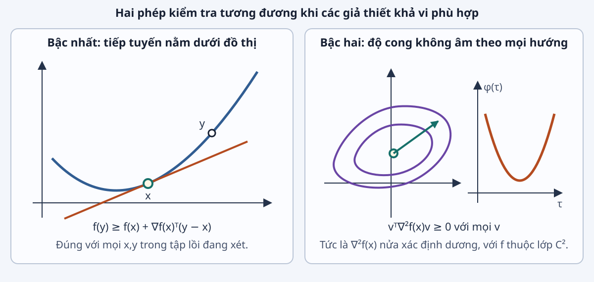
Nhắc lại: $Q$ đối xứng, $Q\succeq0$ nếu $v^TQv\ge0$ với mọi $v$ (Định nghĩa 00.17).
Ví dụ. Với $J(w)=\lVert Xw-y\rVert_2^2$:
Nếu $f_j$ lồi và $\gamma_j\ge0$ thì $\sum_j\gamma_jf_j$ lồi.
Nếu $\psi$ lồi thì $x\mapsto \psi(Ax+c)$ lồi.
Suy ra $J$ và $L$ lồi: mỗi số hạng là hàm lồi của một biểu thức affine theo $w$.
Định lý. Nếu $C$ lồi, $f$ lồi trên $C$ thì mọi cực tiểu địa phương là toàn cục (Định lý 01.32).
Ý nghĩa: với miền lồi và hàm lồi, một kiểm tra trong lân cận đủ cho kết luận toàn cục.
Chứng minh. Nếu $y\in C$ có $f(y)<f(x^*)$ thì $z_\theta=(1-\theta)x^*+\theta y\in C$, $f(z_\theta)<f(x^*)$ và $z_\theta\to x^*$ khi $\theta\to0$, mâu thuẫn.
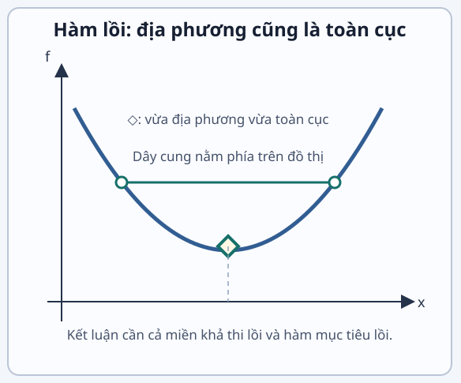
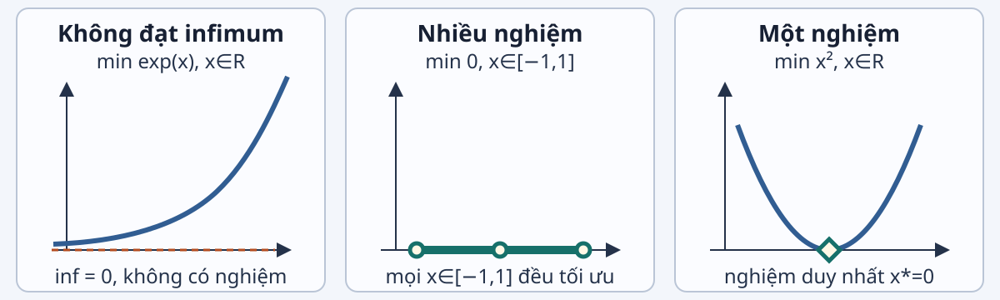
Định lý (Weierstrass). Liên tục trên miền không rỗng, đóng, bị chặn ⇒ đạt giá trị nhỏ nhất.
Định lý. $f$ liên tục, cưỡng bức ($f(x)\to+\infty$ khi $\lVert x\rVert\to\infty$), miền đóng, không rỗng ⇒ đạt giá trị nhỏ nhất.
Định lý. $f$ lồi chặt trên miền lồi ⇒ có nhiều nhất một nghiệm.
Câu hỏi: Điều kiện nào trong (a) Weierstrass, (b) tính cưỡng bức, (c) lồi chặt áp dụng cho $e^x$ trên $\mathbb R$?
Lời giải: (a) không áp dụng, vì $\mathbb R$ không bị chặn.
(b) không áp dụng, vì $e^x\to0$ khi $x\to-\infty$.
(c) áp dụng, vì $(e^x)''=e^x>0$: có nhiều nhất một nghiệm.
Kết luận: $e^x>0=\inf_xe^x$ với mọi $x$, nên không có nghiệm.
Nhu cầu: điều kiện cho cả tồn tại và duy nhất, vì $e^x$ lồi chặt mà không có nghiệm.
Trực quan. Độ cong theo mọi hướng ít nhất $\mu>0$ thì $f$ tăng ít nhất như $\tfrac\mu2\lVert x\rVert_2^2$.
Định nghĩa. Với $C$ lồi, $\mu>0$, $f:C\to\mathbb R$ lồi mạnh (strongly convex) với hằng số $\mu$ nếu $f-\tfrac\mu2\lVert\cdot\rVert_2^2$ lồi trên $C$.
Nhận xét. $C$ mở, $f$ thuộc lớp $C^2$: lồi mạnh khi và chỉ khi $\nabla^2f\succeq\mu I_d$.
Hệ quả. $f:\mathbb R^d\to\mathbb R$ khả vi, lồi mạnh thì có đúng một nghiệm (Hệ quả 01.41).
Nhu cầu: biến mục tiêu lồi thành lồi mạnh, như $L$ trên dữ liệu tách được.
Định nghĩa. Chính quy hóa bậc hai (quadratic regularization) của $F:\mathbb R^d\to\mathbb R$ là $F_\mu(w)=F(w)+\tfrac\mu2\lVert w\rVert_2^2$, $\mu>0$.
Nếu $F$ lồi, khả vi thì $F_\mu-\tfrac\mu2\lVert w\rVert_2^2=F$ lồi, nên $F_\mu$ lồi mạnh với hằng số $\mu$ và có đúng một nghiệm.
Muốn chứng nhận từng kết luận về nghiệm cho ba bài toán và cho một mô hình mới.
Ba chứng nhận · quy trình chứng nhận · bài toán chiếu sáng · tổng kết
Nhu cầu: gắn mỗi kết luận về nghiệm với đúng giả thiết bảo đảm nó.
$C=[-u_{\max},u_{\max}]$ không rỗng, đóng, bị chặn; $q$ liên tục nên nghiệm tồn tại.
$q''(u)=2(1+\lambda)>0$ nên $q$ lồi chặt; nghiệm duy nhất.
Với $x_0=0$, $t=3$, $\lambda=\tfrac12$, $u_{\max}=1$: $u^*=1$ là nghiệm duy nhất dù $q'(1)\ne0$.
Phương trình chuẩn $X^TXw=X^Ty$ luôn có nghiệm, và mọi nghiệm của nó là nghiệm tối ưu (Hệ quả 01.5).
$J$ lồi chặt khi và chỉ khi $X$ có hạng cột đầy đủ.
Với ba điểm $(0,1)$, $(1,2)$, $(2,2)$: $\det(X^TX)=6>0$, nên $w^*=(7/6,1/2)^T$ là nghiệm duy nhất.
Đặt $m_i=y_i a_i^Tw$; khi đó $\ell''(m_i)>0$.
Với hai mẫu tách được tuyến tính, $L$ lồi chặt nhưng $L(w)\downarrow0$ khi $w\to+\infty$, không đạt giá trị nhỏ nhất.
Chính quy hóa bậc hai: $\nabla^2L_\mu=\nabla^2L+\mu I_d\succeq\mu I_d$, nên $L_\mu$ lồi mạnh và có đúng một nghiệm với mọi dữ liệu.
| Trường hợp | Miền | Mục tiêu | Tồn tại | Duy nhất |
|---|---|---|---|---|
| Điều khiển | Đoạn | Lồi chặt | Có | Có |
| Hồi quy tuyến tính | $\mathbb R^d$ | Lồi | Có | Khi $\operatorname{rank}(X)=d$ |
| Logistic tách được | $\mathbb R^d$ | Lồi | Không | Không đặt ra |
| Logistic, $L_\mu$ | $\mathbb R^d$ | Lồi mạnh | Có | Có |
Miền và mục tiêu lồi cho kết luận toàn cục; tồn tại cần thêm giả thiết.
Câu hỏi: Với một mô hình mới, giả thiết nào hỗ trợ từng kết luận ở bước 3?
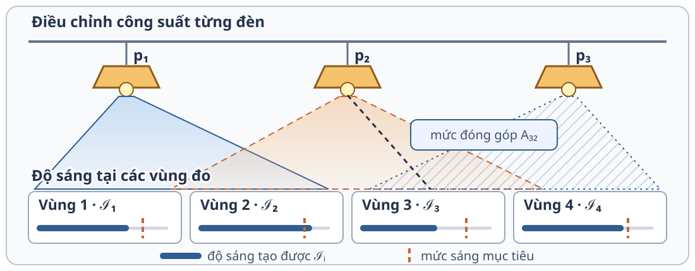
$d$ đèn tạo độ sáng trên $n$ vùng: $\mathcal I=Ap$, với $A\in\mathbb R^{n\times d}$ có mọi phần tử không âm và công suất $p\in\mathbb R^d$.
Câu hỏi: (1) Chỉ ra dữ kiện, biến, mục tiêu, miền. (2) Chứng nhận miền và mục tiêu lồi.
(3) Chứng minh nghiệm tồn tại. (4) Nêu điều kiện đủ để nghiệm duy nhất.
Lời giải:
| Kết quả | Giả thiết đủ | Công cụ kiểm tra |
|---|---|---|
| Toàn cục | $C$ lồi, $f_0$ lồi trên $C$ | Tập cơ bản, giao; bậc nhất, bậc hai, phép toán bảo toàn |
| Tồn tại | $f_0$ liên tục, $C$ không rỗng, đóng; $C$ bị chặn hoặc $f_0$ cưỡng bức | Định lý Weierstrass; định lý về hàm cưỡng bức |
| Nhiều nhất một nghiệm | $f_0$ lồi chặt trên $C$ lồi | Định nghĩa; $\nabla^2f_0\succ0$ trên $C$ mở |
| Đúng một nghiệm | $C=\mathbb R^d$; $f_0$ khả vi, lồi mạnh | $\nabla^2f_0\succeq\mu I_d$; chính quy hóa bậc hai |
Câu hỏi: Với $J_\mu(w)=\lVert Xw-y\rVert_2^2+\tfrac\mu2\lVert w\rVert_2^2$, $\mu>0$, chứng nhận ba kết luận cho mọi $X\in\mathbb R^{n\times d}$.
Kết luận nào mất khi $\mu=0$ và $\operatorname{rank}(X)<d$?
Gợi ý: $\nabla^2J_\mu=2X^TX+\mu I_d$.